产品与体验设计 · 医疗关怀
孤独深触
Solitude's Embrace
当拥抱变得稀薄，设计成为触碰的另一种方式。When touch grows rare, design becomes the hand that remains.
Trained in stage design. Now building bridges between brand and feeling, with AI as the loom.
精选作品 · Selected Work
产品与体验设计 · 医疗关怀
Solitude's Embrace
当拥抱变得稀薄，设计成为触碰的另一种方式。When touch grows rare, design becomes the hand that remains.
装置艺术 · 影像装置
Silence Taming
恐惧不是终点，是被听见的开始。Fear isn't the end. It's where being heard begins.
Web3 产品设计 · 虚拟偶像平台
Idol Forge
在虚拟与真实之间，锻造一份共同拥有的星光。Between real and virtual, forging a light everyone can hold.
游戏设计 · 叙事系统
PASS
资源计算到最后一位，人成了被四舍五入的数字。When resources are calculated to the last digit, people become the rounding error.
关于我 · About
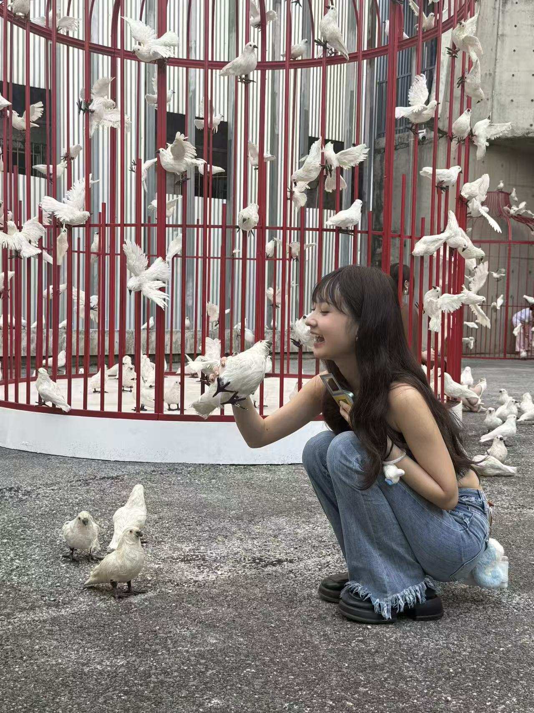
Hover 切换Itzel Tang — Stage / Brand / AI
唐畅蓥子，中央戏剧学院舞台设计出身，现于香港科技大学攻读 Master of Art of Art and Machine Creativity。六年里，我在剧场画光、在品牌里造词、在 AI 的缝隙里练习新的手艺。我相信设计不是装饰生活，而是替说不出口的情绪，找一个可以被看见的形状。
Itzel Tang trained in stage design and is now studying Art and Machine Creativity at HKUST. Six years spent painting light for the theatre, writing for brands, and learning a new craft in the space AI leaves open. She believes design doesn't decorate life — it gives an unspeakable feeling a shape you can finally see.
国际设计荣誉International design honors
悬停查看 · Hover
年创作生涯Years of practice
悬停查看 · Hover
跨界身份 · 舞台设计师 / 策展人 / 数字媒体设计师 / AI 创作者Interdisciplinary roles
悬停查看 · Hover
视觉碎片 · Fragments
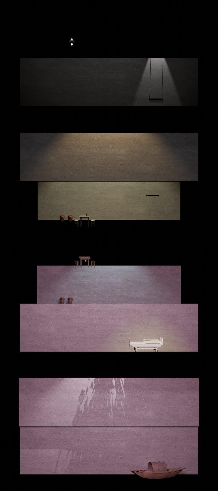
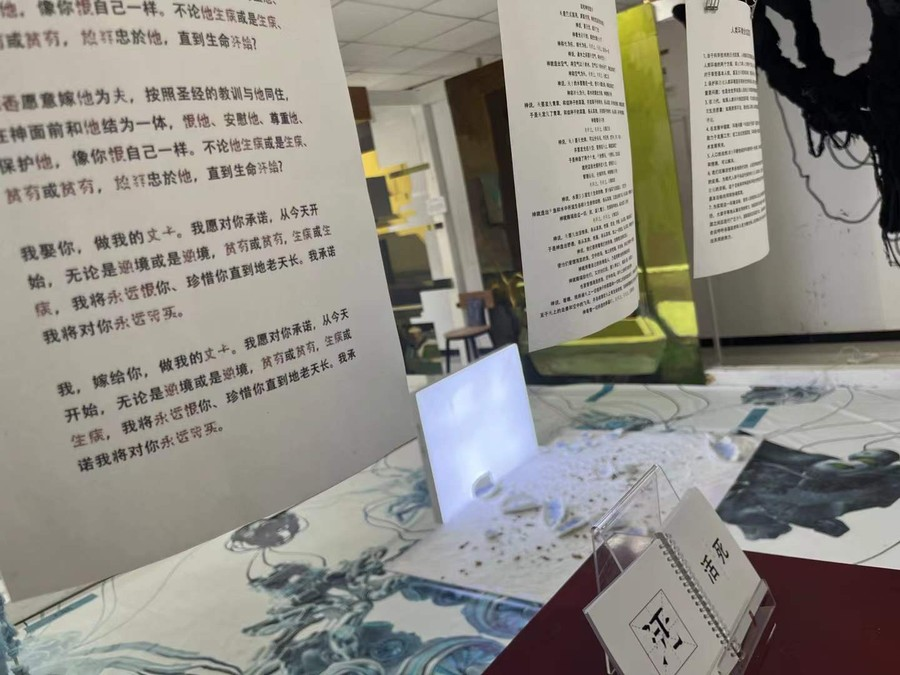
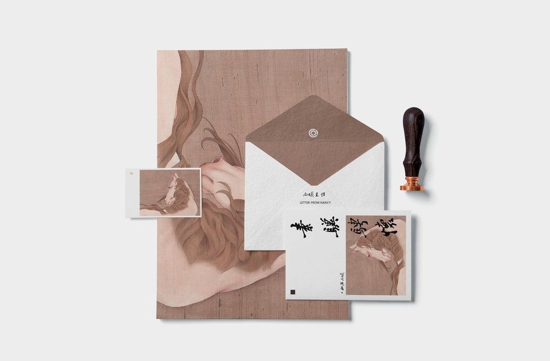
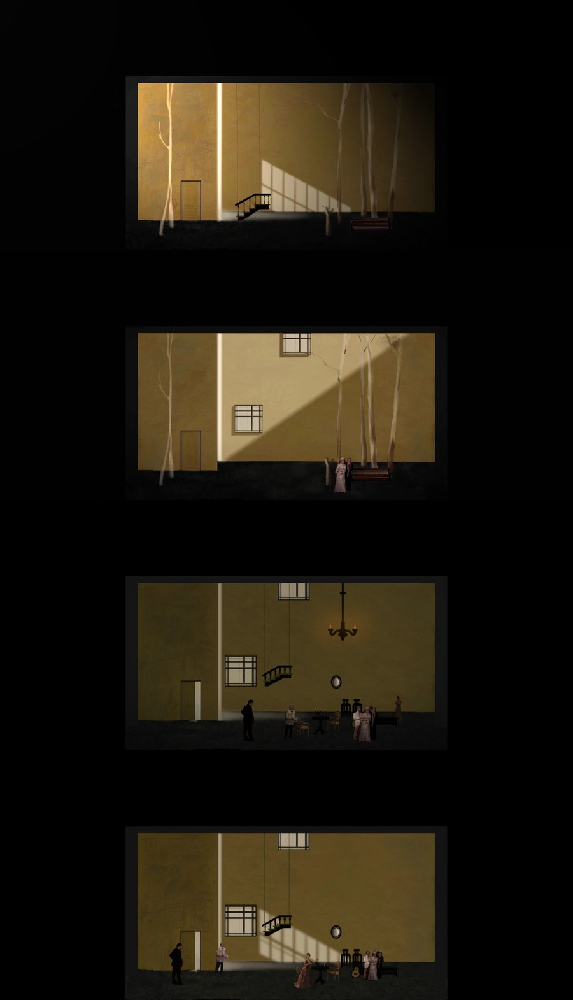
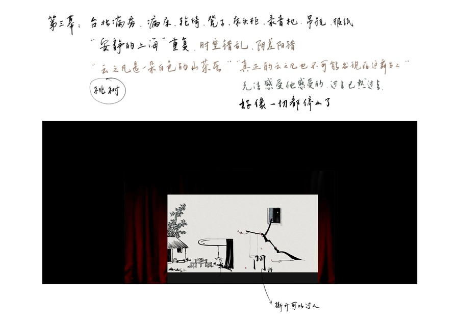
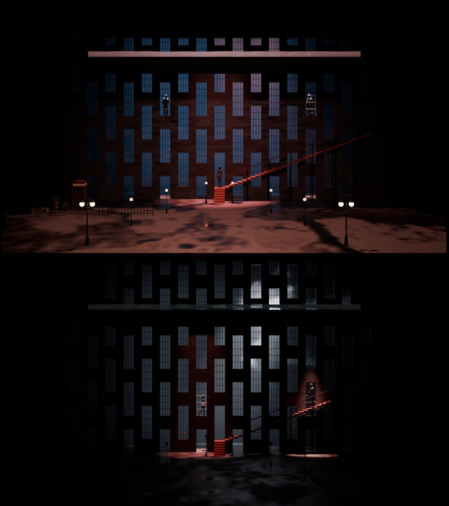
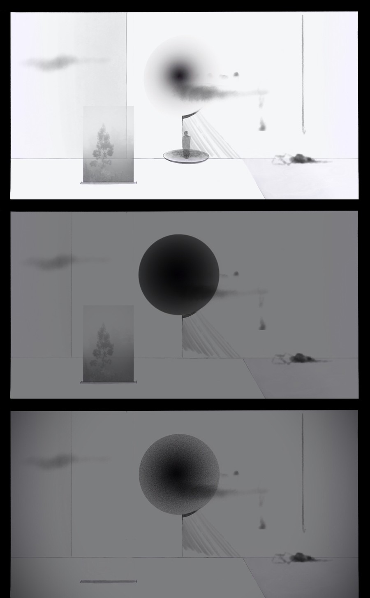
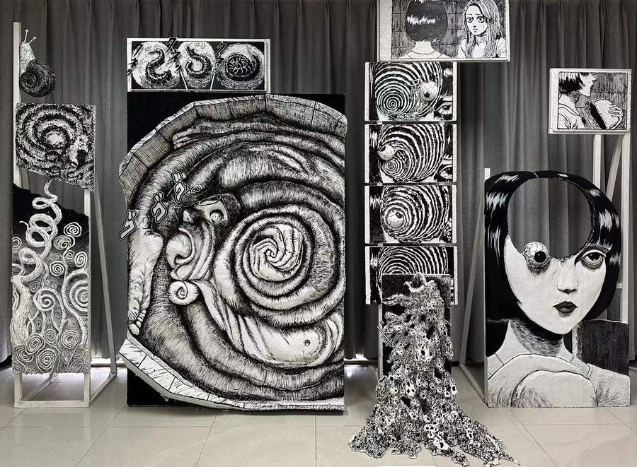
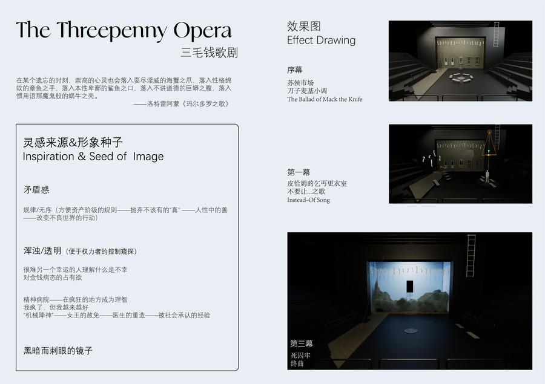
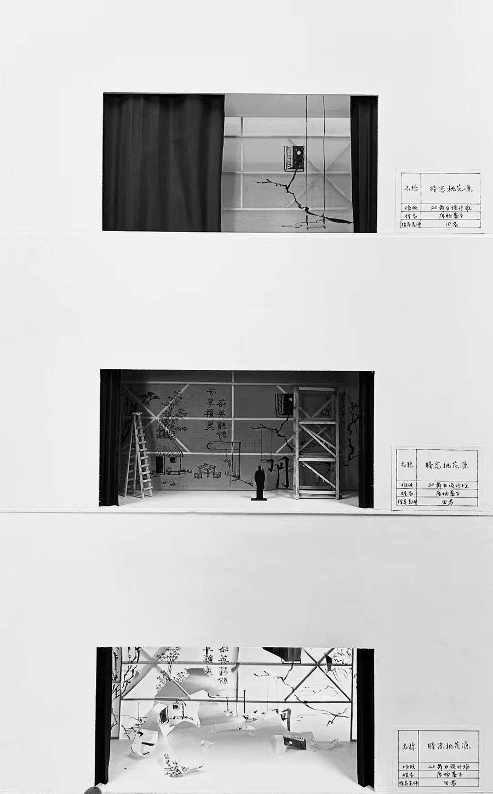
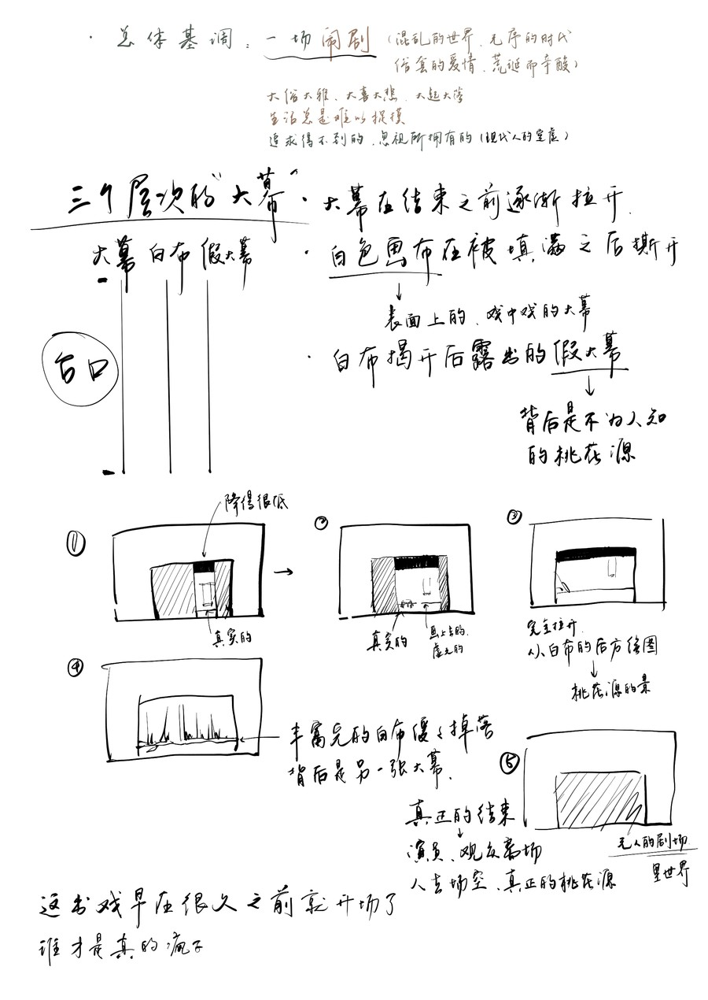
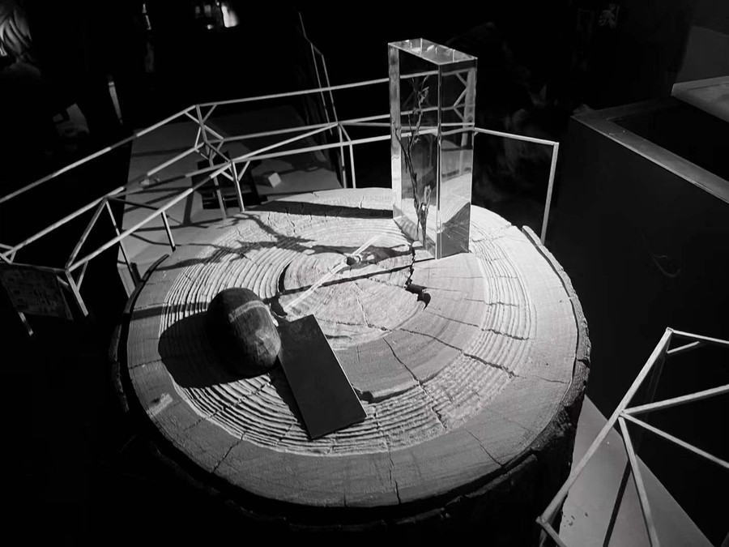
技能与工具 · Craft & Tools
UI / UX 设计Interface & Experience
平面设计Graphic Design
舞台与展陈Stage & Exhibition
动态影像Motion & Video
AI 创作工作流AI Creative Workflow
原型与前端Prototyping / Front-end
Contact